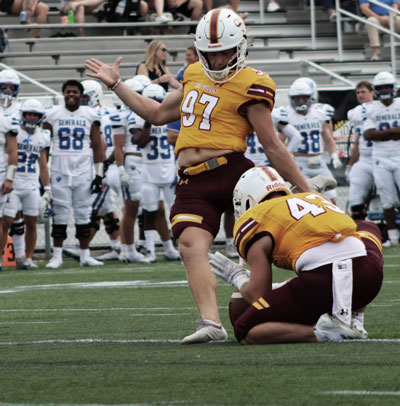

Photo Project |
||
| Home Print Project Photo Project Video Project Infographic Project | ||
|
Home Print Project Photo Project Video Project Infographic Project |
 |
The photo project was my favorite project. With the help of Adobe Photoshop, I was able to take a photo that was nothing and turn it into something. While understanding the various composition techniques such as symmetry, rule of thirds, vary point of view, leading lines and framing. To complete my understanding I used proper photo editing skills that consisted of cropping, tonal value, contrast, brightness, and file format. |
|
©2024 Kaelyn Samaha |
||